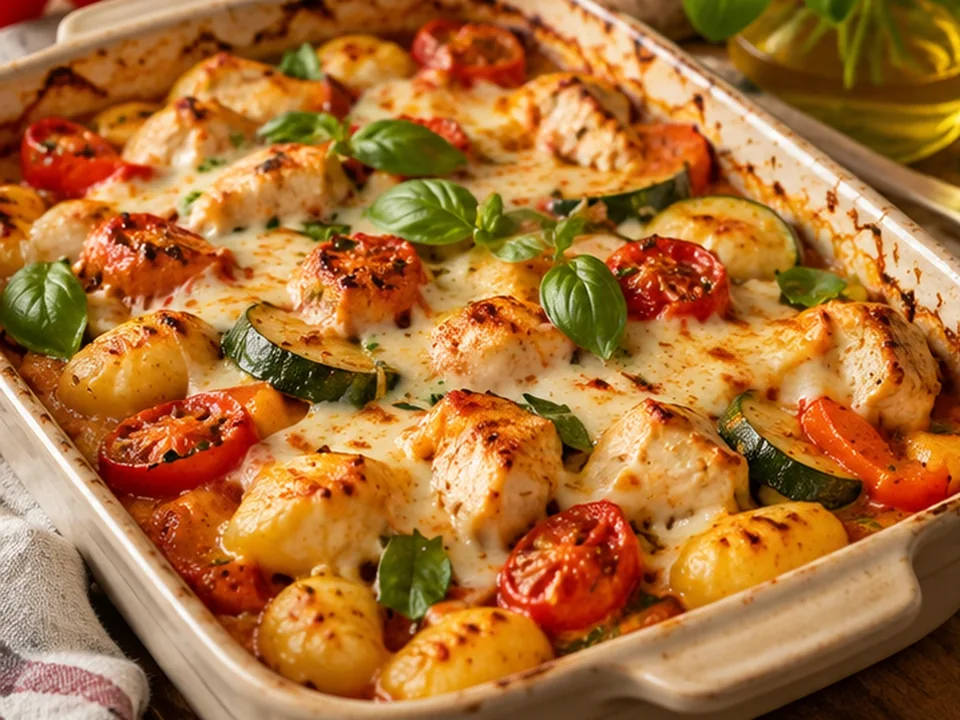

DE COLLECTIE
Wat zet je vandaag op tafel?
Zoek een gerecht, kies je porties en verzamel je boodschappen.
Recepten laden…
Van snelle doordeweekse maaltijden tot recepten waar je uitgebreid de tijd voor neemt. Alles op één plek.

Zoek een gerecht, kies je porties en verzamel je boodschappen.
Recepten laden…